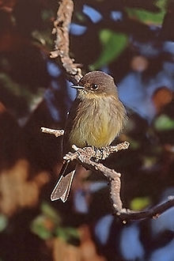
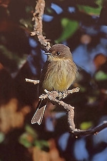

| Eastern Phoebe | |
|---|---|
|  | |
| Photographed at Cape May, NJ, during fall migration | |
| Conservation status | |
| Binomial name | |
| Sayornis phoebe (Latham, 1790) |
| Eastern Phoebe | |
|---|---|
|  | |
| Photographed at Cape May, NJ, during fall migration | |
| Conservation status | |
| Binomial name | |
| Sayornis phoebe (Latham, 1790) |
The Eastern Phoebe (Sayornis phoebe) is a small passerine bird. This tyrant flycatcher breeds in eastern North America, although its normal range does not include the southeastern coastal USA.
It is migratory, wintering in the southernmost USA and Central America. It is a very rare vagrant to western Europe. This is one of the first birds to return to the breeding grounds in spring and one of the last to leave in the fall. They arrive for breeding in mid-late March, but they return to winter quarters around the same time when other migrant songbirds do, in September and early October; migration times have stayed the same in the last 100 years.[1]
This species appears remarkably big-headed, especially if it puffs up the small crest. Its plumage is gray-brown above. It has a white throat, dirty gray breast and buffish underparts which become whiter during the breeding season. Two indistinct buff bars are present on each wing. Its lack of an eye ring and wingbars, and its all dark bill distinguish it from other North American tyrant flycatchers, and it pumps its tail up and down like other phoebes when perching on a branch. The Eastern Phoebe's call is a sharp chip, and the song, from which it gets its name, is fee-bee.
The Eastern Wood-pewee (Contopus virens) is extremely similar in appearance and voice. It lacks the buff hue usually present on the lighter parts of the Eastern Phoebe's plumage, and thus has always clearly-defined and contrasting wing-bars. It also does not bob its tail habitually, and appears on the breeding grounds much later though it leaves for winter quarters at about the same time as the Eastern Phoebe.[2]
The breeding habitat of the Eastern Phoebe is open woodland, farmland and suburbs, often near water. This phoebe is insectivorous, and often perches conspicuously when seeking food items. It also eats fruits and berries in cooler weather.
It often nests on human structures such as bridges and buildings. Nesting activity may start as early as the first days of April.[3] The nest is an open cup with a mud base and lined with moss and grass, built in crevice in a rock or man-made site; 3-8 eggs are laid. Both parents feed the young and usually raise two broods per year. The Eastern Phoebe is occasionally host to the nest-parasitic Brown-headed Cowbird (Molothrus ater).

{kind=link}
{kind=link}